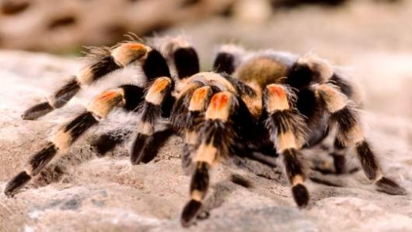

Amazing facts about tarantulas!

-
There are approximately 900 species of tarantula in the family Theraphosidae.
-
The tarantula’s reputation is based more on legend than reality as there are only a few species which have a powerful bite. The venom of most is not highly toxic to humans. Tarantulas are actually placid and harmless and will only attack if goaded and, in many cases, the bite is no more harmful to humans than a bee sting.
-
Tarantula’s jaws move up and down, instead of the more common side-to-side motion in other spiders. They also have 8 tiny eyes, which are able to distinguish the slightest movement, and hairs which cover its body and are extremely sensitive to vibrations.
-
Some species have adhesive ‘hair-brushes’ on the tip of their legs which allows them to climb vertically up even the smoothest leaves.
-
Tree-dwelling species locate a mate by their scent, and then follow the silken trail that the female leaves as she moves.
-
While mating takes place at various times of the year, rainstorms in the desert areas of south-western Mexico causes vast number of male spiders to wander around in search of a potential mate. In some species, the male performs a jerky courtship dance to encourage the female to become receptive..
-
After mating, the female carries her eggs in a silken cocoon attached to her body. The growth of a newly hatched spider into a mature spider is a long process and can take up to ten years.
-
The tarantula does not spin a web, but bites its prey with long, curved fangs, injecting it with a poison which slowly renders the victim helpless. It will then crush its food between its powerful jaws, at the same time injecting a fluid which breaks down the victim’s tissues. This turns the prey into a soft pulp, which can then be eaten.
-
Tarantulas have a wide range of defences. Some species simply lean back on their haunches, raising their head and legs and exposing their curved fangs in an intimidating display. South American species of tarantula use their legs to scrape off the fine hairs from the top of their abdomen. Each hair is covered with tiny points which, when propelled at an enemy, are both painful and dangerous, especially if they come into contact with the eyes or skin. These tactics are used against a variety of predators, such as racoons and skunks which try to dig the tarantula out of its burrow, or birds, lizards and frogs which may attack it when it is exposed in the open.
-
The ‘spider-hunting wasp’ is the most deadly enemy of the tarantula. Known as the ‘tarantula hawk’, it is usually much smaller than the tarantula, yet ventures into the spider’s burrow and manages to paralyze it with its sting. It then drags the spider back to its own burrow and keeps it to provide a fresh supply of food for its larvae.
-
The purse-web spider, Atypus affinis, is a British species once thought to be a tarantula; however it has now been classified separately.
-
Some of the more popular and colourful species are now threatened due to collecting for the exotic pet trade. The Mexican red-kneed tarantula is a protected species and international trade in this spider is restricted under law.
-
The name tarantula was originally given to a spider living in Southern Italy from the town of Taranto where legend claims that a small species of spider living there had a fatal bite. The only cure was for the victim to dance until exhausted, by which time the poison would have been sweated from the system (the frenzied folk dance based on the Italian legend is called the tarantella).